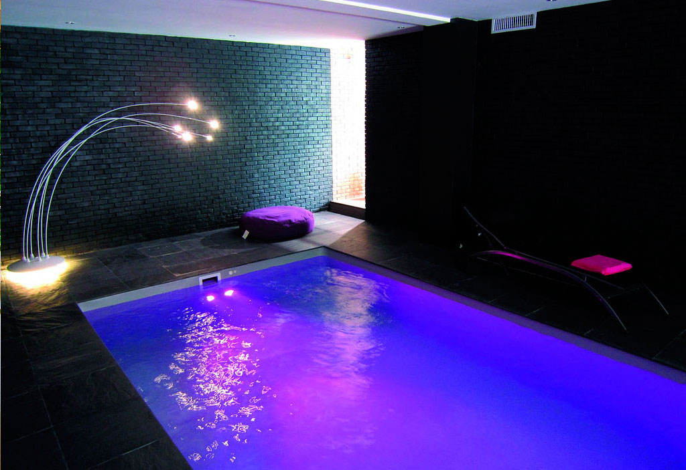

Piscine Extérieure "Joyeuse vie" Choisissez le meilleur de la piscine extérieure !
La piscine enterrée : une piscine extérieure sur-mesure
Envie de grands espaces de baignades et d'une structure enterrée ? Définissons ensemble votre projet de piscine extérieure avec la piscine enterrée.
En kit ou construite par nos experts, cette piscine extérieure répondra à toutes vos exigences.
Chaque piscine enterrée suit un procédé d'installation et un savoir-faire depuis longtemps éprouvé. Du coulage du béton à la pose du liner, les maçons Desjoyaux vous accompagnent dans l'installation de cette piscine extérieure.
Si vous choisissez l'option piscine en kit pour votre piscine extérieure, vous pourrez tester vos talents de bricoleurs pour certaines étapes de construction et nous prendrons le relai pour des étapes plus " sensibles ".
Si vous préférez nous confier la construction intégrale de la piscine extérieure, nous vous garantissons la qualité de notre expertise pour une piscine enterrée qui répond à toutes vos exigences.
Quel que soit votre projet, nous pouvons vous aider et vous accompagner dans la définition de votre piscine extérieure et de son installation. Demandez votre étude personnalisée en ligne pour cette piscine extérieure et l'un de nos concessionnaires vous rappellera
Piscine intérieur "Vie ma vie"

Spa
l'essentiel :Le Spa JD Competitiv est équipé de 6 postes de massage dont une place couchette pour des moments de détente inoubliables.
Les plus:
• Atouts bien-être :
o Aromathérapie avec notre diffuseur d’arômes
o Chromothérapie avec les cascades et jets lumineux
o Ergonomie maximale avec les jets réglables
• Atouts pour réduire les interventions d'entretien et préserver la pureté de l’eau :
o Générateur d’ozone pour garantir la pureté de l’eau.
o Jets ABS avec inserts inox
o Drainage du fond
o Filtre antimicrobien Microban®
• Couvert par la garantie et le service après-vente
• Disponible dans différentes couleurs
caractéristiques techniques: 25 jets
• Revêtement acrylique. Ils sont résistants, garantissent une longue durée de vie et un entretien minime.
• Spots chromothérapie
• Blower avec réchauffeurs : 1 x 1200 W
• Puissance du réchauffeur : 3 kW
• Pompes : 1 x 2100 W
• Base en plastique ABS. Une base étanche et résistante à tous types de climats, extrêmement durable.
• Injecteur d’air pour le drainage lymphatique et la relaxation.
• Couverture rigide incluse, en polystyrène extrudé XPS lui confère des propriétés isolantes
• Dimensions : 2055 x 1975 x 750 cm
Saunas
Sauna Traditionnel ClassiK - 3 places
Les bienfaits du sauna à petit prix
Originaire de Finlande, le Sauna Vapeur ou Sauna Traditionnel à su évoluer jusqu'à un point où maintenant il est de plus en plus présent chez les particuliers.
En effet, ne pas avoir à réserver une séance et se déplacer vous permet de profiter au maximum de la relaxation procurée car vous n'accumulez pas le stress éventuel sur le trajet du retour.
Profitez dès à présent des avantages du sauna vapeur ClassiK 3 places à prix réduit :
Une forte chaleur détendra tous les muscles du corps
Évacuer le stress accumulé au fil de la journée
Fluidification de la circulation sanguine pour une meilleure oxygénation
Active le système immunitaire pour un effet préventif
Améliore l'élasticité de la peau pour une apparence rajeunie
Réduit les tensions musculaires et articulaires
1 269,00 €
Sauna Traditionnel ClassiK 5 places
Tous les bienfaits du sauna version XXL
La popularité du sauna, toujours en croissance fait qu'il est désormais accessible aux particuliers à des prix imbattables.
Grâce à une sélection soignée des matériaux, l'industrie du Sauna Vapeur à réussi le pari de fabriquer des saunas robustes et performants avec un rapport qualité prix très intéressant.
Le Sauna Tradtionnel ClassiK 5 places possède une grande capacité d'accueil pour des séances de bien-être à plusieurs sans être confiné :
Détends tous les muscles du corps avec l'action de la chaleur
Évacue le stress accumulé tout au long de la journée
Améliore l'oxygénation grâce a une circulation plus fluide du sang
Stimule le système immunitaire pour éliminer les toxines
Augmente l'élasticité de la peau pour une apparence jeune
Réduit les tensions musculaires et articulaires
Un Sauna Vapeur gigantesque au montage sans outils pour une durabiltité exceptionnelle
Du bois d'Épicéa Nordique choisi sans noeuds d'origine certifiée du Canada à été sélectionné pour fabriquer le sauna vapeur ClassiK de par sa faible conductivité thermique, sa solidité et son isolation remarquable.
Quand au montage ou démontage, rien de plus simple avec le système d'attaches Fast-up qui ne nécessite pas d'outils.
Assemblez et clippez les panneaux pour un magnifique sauna de taille XXL monté en moins de 30 minutes en étant 2 personnes
L'exclusivité Sauna Factory : un Poêle Vapeur Électrique haut de gammePoêle electrique Vega Harvia
Le cœur de votre Sauna a été confié à Harvia, une marque Finlandaise et leader mondial en terme de fabrication de poêle électrique pour Sauna et ce depuis plus de 60 ans.
Une installation simple avec une plaque murale fixée avec 6 vis sur la paroi de votre Sauna.
Il suffira ensuite de simplement glisser votre poêle Sauna dans la plaque et de sécuriser la fixation par une vis.
Le Poêle Sauna Vega peut être connecté en monophasé 230V ou en triphasé 230-400V et est parfaitement adapté au volume de votre Sauna avec sa puissance de 8 kW.
Sa structure en acier inoxydable lui garanti une durabilité exceptionnelle ainsi qu'un design chromé élégant.
Avec sa commande intégrée, il est très facile d'ajuster la puissance ainsi que la durée de votre séance sans avoir à sortir de votre Sauna.
Profitez de tous les bienfaits du Sauna Vapeur en grand et en famille grâce a une surface géante permettant de recevoir jusqu'à 5 personnes.